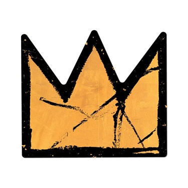

White Tiger Basquiat
Catalogue home
1960s–1970s
1980s
1990s
2000s
2010s
2020s
Search Catalogue
← Return to 2018
Title:
White Tiger Basquiat
Date:
2018
Medium:
Oil on canvas
Dimensions:
24 × 36 inches
Work ID:
RE-001497
Signature:
Signed “ENGLISH,” lower right.
Provenance:
Artist's Personal Collection
Cultural & Artistic References

The Crown, Jean-Michel Basquiat
Guy Hepner
Notes
Also known as
Basquiat
.
← Previous: Waylone Wolf
Next: Yohood Ice Cream →